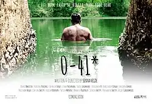

0-41*
| 0–41* | |
|---|---|
 | |
| Directed by | Senna Hegde |
| Written by | Senna Hegde |
| Produced by | Preetham Hegde Chetan Shetty Prasanna Hegde |
| Starring | Rajesh Thoyammal Vipin Kavvai Abhilash Thoyammal Priyadath TK Sanal Manu |
| Cinematography | Keertan Poojary |
| Edited by | Syam Krishnan |
| Music by | Senna Hegde Unni Abhijith Glady Abraham Subha Naidu |
Production company | Marley State of Mind |
Release date |
|
Running time | 91 minutes |
| Country | India |
| Language | Malayalam |
0–41* is an Indian feature film documentary in Malayalam language by director Senna Hegde examining young volleyball players and their lives in rural Kanhangad, India.[1]
The film had its world premiere at the 11th Cinema on the Bayou Film Festival at Lafayette, US.[2]
Plot
A group of local youth in a small town in India are closely knit by a game of volleyball every evening. Rajesh and Vipin lead the two teams with a great deal of passion until a seemingly endless losing streak sets Rajesh and his team on a trail of disbelief and dejection. The docudrama proceeds to draw a subtle parallel between the losing streak and the lives of these youth. Over the course of six days, this film brings into sharp focus their life stories, their aspirations and expectations, their faith and fears and their view on the rest of the world with the rural way of life in India providing a vivid backdrop.[3]
Cast
- Rajesh Thoyammal
- Vipin Kavvai
- Abhilash Thoyammal
- Priyadath TK
- Sanal Manu
- Ebi Ganesh
- Vishnu Lakshmanan
- Sunil Thoyammal
- Ambu
Film festivals
- Official Selection at the 11th Cinema on the Bayou Film Festival,[4] Lafayette, US.
- Official Selection at the 1st RapidLion, the South African International Film Festival,[5] Johannesburg, SA
- Official Selection at the 3rd Noida International Film Festival,[6] New Delhi, India.
- Official Selection at Miami Independent Film Festival,[7] Miami, US.
- Official Selection at Newark international Film Festival,[8] Newark, US.
Awards
- Winner – Best Cinematography, 3rd Noida International Film Festival[9] On 7 February 2016. New Delhi, India.
- Nominated – Best Director, Newark International Film Festival[10] On 11 September 2016. Newark, US.
References
- ^ "A tale from Kanhangad reaches Bayou film festival". The Times of India. 20 January 2016. Retrieved 2 February 2016.
- ^ "0–41: A Film About Reality Shines in Bayou Festival Platform – UT TV". Uttv.in. Retrieved 2 February 2016.
- ^ "Indulge – Kochi". The New Indian Express. Retrieved 2 February 2016.
- ^ "Films – PublicView". Cinemaonthebayou.com. Retrieved 2 February 2016.
- ^ "Game of Life". The New Indian Express. Archived from the original on 29 January 2016. Retrieved 2 February 2016.
- ^ "Noida International Film Festival". Miniboxoffice.com. Retrieved 2 February 2016.
- ^ "Miami Independent Film Festival". Miami Indie Fest. Retrieved 2 July 2016.
- ^ "Newark International Film Festival". Newark International Film Festival. Retrieved 2 August 2016.
- ^ "Feature Films & Feature Documentary Result: 3rd NIFF-16 - Results". Archived from the original on 13 August 2016.
- ^ "NIFF 2016 Winners". 15 September 2016.